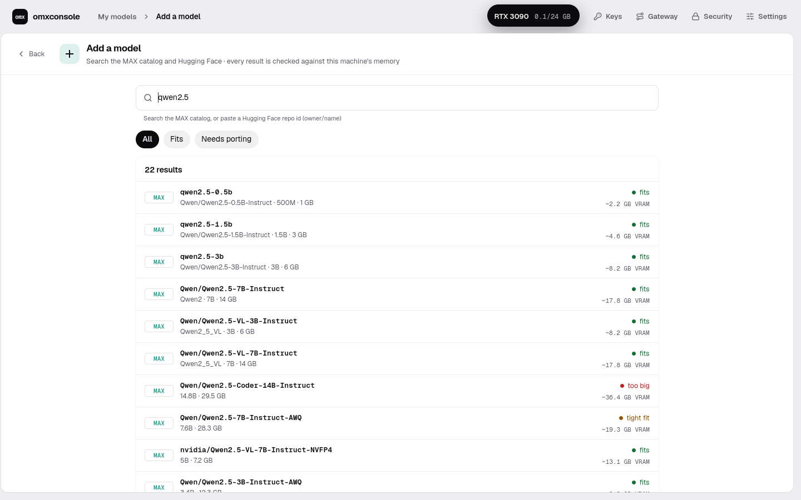
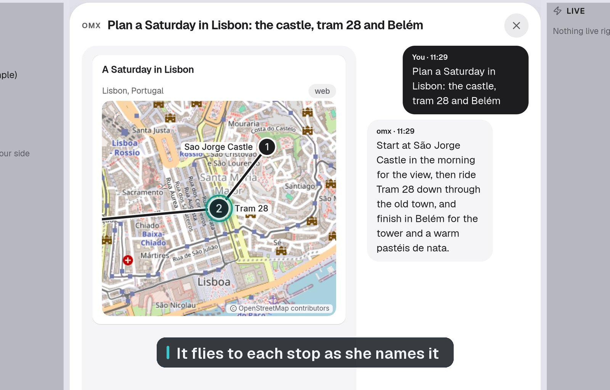
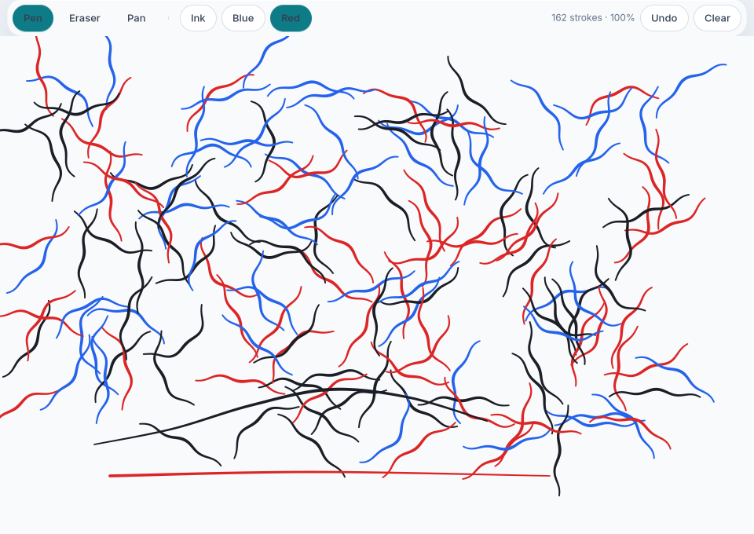
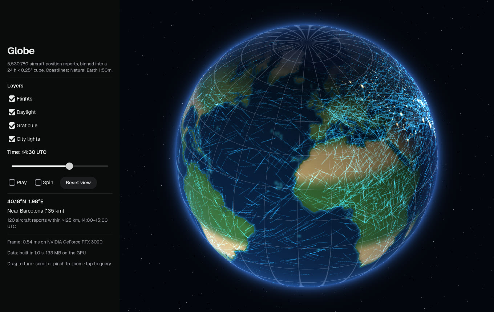
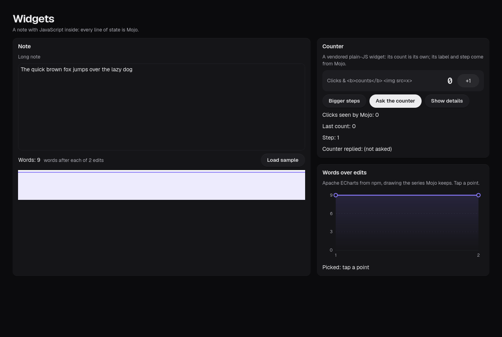

The product · data explorer
omxplorer
A spreadsheet, the video behind every row and the documents that explain it, on one page, on your own GPU.
Apps and demos built from one Mojo codebase with omxcode: omxplorer for robot & multimodal data, omxconsole for local models on MAX, omxome (experimental), and five focused native framework demos below.
A spreadsheet, the video behind every row and the documents that explain it, on one page, on your own GPU.

Find a model on Hugging Face, download it and serve it on your own GPU through Modular's MAX: one OpenAI-style endpoint with a key per app, and benchmarks. All omxcode.
Needs MAX installed (docs.modular.com/max/packages). Mac: it opens and starts its service on GitHub's Mac runners; no model has been served on a Mac yet.

Ask out loud and it shows you: live tiles on a three-column Stage, a chat bar that grows into a visual explanation and points at what it means, cards the model builds as it talks. Local most of the time, your own subscription when you ask.
Build from source for now (examples/omx/README.md): Linux with NVIDIA GPUs; the Stage alone also runs on the Mac.
Ink, a database, a background app, a GPU canvas, every platform's own controls, JavaScript libraries as guests. Native apps, no web builds.

Pressure ink with pan and zoom. Strokes taper with the pen; panning moves the kept ink, never redraws it.

A canvas the app paints itself, around native controls: how map and photo apps are built.

A 3D Earth drawn by one Mojo function per pixel on the GPU: Natural Earth coastlines rasterized at start-up, 5.5 million aircraft reports in a 24-hour data cube, the sun and city lights. Tap to query a cell.

A to-do list in GTK, AppKit, UIKit and Android's own controls, driven by Mojo: no Swift, no Kotlin.

CodeMirror and ECharts from npm inside a native Mojo app: the JS draws, Mojo keeps every line of state, the theme restyles them live and agents can read and set them.
Linux: needs WebKitGTK 6.0
examples/widgets